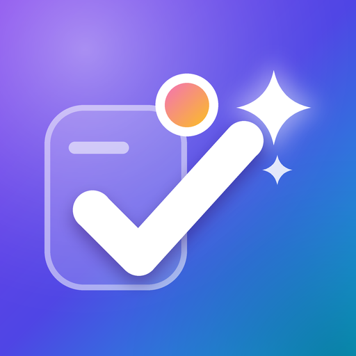

MegaDo
Tasks, notes and reminders for Android that never let anything slip, with optional sync between your devices through your own Google Drive.
Download MegaDo APK All releases & changelog
Free · No ads · No tracking · Android 7.0 and newer · phones and tablets
What is MegaDo?
MegaDo is a personal organizer for Android that puts your to-do list, your notes and your reminders in one place. Add a task in plain words like "Call mom tomorrow 5pm" and MegaDo fills in the date, time and reminder for you. Choose how loudly each reminder gets your attention, from a quiet notification to a full-screen alarm, snooze it for as long as you like, or have it remind you when you arrive somewhere instead of at a time.
Your notes can mix text, checklists, photos, hand drawings and voice recordings. Everything lives on your device, and if you use more than one, MegaDo keeps your phone and tablet in sync through a hidden folder in your own Google Drive.
Features
To-dos that fit your day
Lists, subtasks, priorities, tags and pinning. A Today view with overdue, today and the next 7 days, plus your streak and weekly progress.
Quick add in plain words
Type "Groceries every week" or "Standup every weekday at 9:30" and MegaDo sets the date, repeat and reminder.
Reminders your way
Pick an alert style per reminder: silent, notification, loud, or a full-screen alarm that rings until you respond.
Snooze and repeat freely
Snooze for minutes, hours or a custom time. Repeat every few minutes, hourly, daily, weekly on chosen days, monthly or yearly, with an optional end date.
Keep reminding until done
Turn on nagging and MegaDo re-alerts every few minutes until you mark the task done.
Location reminders
Draw a circle on the map and get reminded when you arrive at or leave a place, like the supermarket or the office.
Rich notes
Combine text, checklists, photos, camera shots, drawings and voice recordings in a single note. Pin, color, tag and archive notes.
Draw and record
A full drawing canvas with brushes and colors, and a voice recorder with waveform playback, right inside your notes.
Calendar and search
See tasks and reminders by month or week, and find anything instantly across tasks and notes.
Home-screen widget
Check off today's tasks straight from your home screen.
Sync your devices
Turn on Google Drive sync on your phone and tablet and changes flow both ways, including photos, drawings and recordings.
Backup and trash
Export everything to a single file and restore it any time. Deleted items wait 30 days in the trash.
Beautiful themes
Light and dark modes, accent colors and animated backgrounds, with layouts made for both phones and tablets.
Gentle on your battery
No constant polling, batched background work, and animations that pause when you aren't looking or when battery saver is on.
Private by design
No accounts, ads, analytics or servers. Your data stays on your devices and, if you choose, in your own Google Drive.
Screenshots


Download and install
- Download MegaDo.apk (latest version) on your Android phone or tablet.
- Open the file. If Android asks, allow installing apps from your browser or file manager.
- To update later, download the newest APK and install it over the old one. Your data is kept.
Older versions and release notes are on the releases page.
Syncing your phone and tablet
Open Settings → Sync → Sync with Google Drive on each device and choose the same Google account. MegaDo only gets access to its own hidden folder in your Drive and can't see your other files. Your data goes straight from your device to your Drive and never to the developer. Sync runs when you open or leave the app and about once an hour in the background.
Questions
Is MegaDo free?
Yes. It's free, with no ads and no in-app purchases.
Why isn't it on Google Play?
MegaDo is distributed directly as an APK from this site and its GitHub releases.
Does it work without internet?
Yes. Everything works offline. Internet is only needed for maps, place search and Google Drive sync.
Why do location reminders need "Allow all the time"?
Android only lets an app notice that you arrived somewhere while it's closed if location access is allowed all the time. MegaDo uses Android's battery-efficient geofencing and never records where you go.